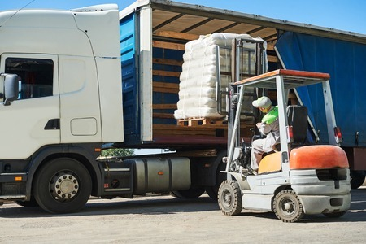

<main>
    <article>
        <div class="main-title">
            <h1>Los Beneficios de Tercerizar Cargas en el Transporte</h1>
        </div>
        <figure>
            
        </figure>
        <section class="intro-text">
            <p>
                En el siempre dinámico mundo del transporte y la logística, las empresas se enfrentan a la constante presión de optimizar operaciones, reducir costos y ofrecer servicios de calidad. En este contexto, la <b>tercerización de cargas</b> surge como una solución clave para aquellas empresas que buscan prosperar en un entorno competitivo.
            </p>
        </section>

        <section>
            <h1>¿Qué implica tercerizar cargas y por qué tantas empresas están optando por esta práctica?</h1>
            <p>
                Tercerizar cargas, también conocido <b>outsourcing logístico</b>, puede ofrecer beneficios para aquellas empresas que necesitan cubrir sus necesidades de transporte.
            </p>
            <p>Aquí algunos de los beneficios clave:</p>
        </section>

        <section>
            <h1>Enfoque en Competencias Principales</h1>
            <p>
                La externalización de funciones logísticas permite que las empresas centren su atención en sus competencias principales. Esto se traduce en una dedicación más profunda de tiempo y recursos a actividades fundamentales como producción, ventas o servicios. Al confiar la gestión logística a expertos especializados, se garantiza una eficiencia operativa óptima, permitiendo que la empresa se concentre en potenciar y desarrollar sus áreas centrales.
            </p>
        </section>

        <section>
            <h1>Reducción de Costos Operativos</h1>
            <p>La tercerización no solo implica una gestión más eficiente de la cadena de suministro, sino que también puede resultar en ahorros significativos para la empresa contratante. Al aprovechar las economías de escala y la experiencia de las empresas de logística, se reducen los gastos operativos en comparación con la gestión interna de la empresa contratante. Se presenta como una opción más rentable para optimizar recursos y maximizar los beneficios.</p>
        </section>

        <section>
            <h1>Flexibilidad y Escalabilidad</h1>
            <p>
                El outsourcing no solo proporciona una mayor flexibilidad, sino que también facilita la adaptación ágil a las fluctuaciones en la demanda, en comparación con la gestión interna, evitando los desafíos que surgen al intentar ajustar los recursos por cuenta propia. 
            </p>
            <p>
                La capacidad de las empresas de logística para adaptar rápidamente los recursos según las necesidades cambiantes representa una ventaja significativa. En contraste, cuando las empresas gestionan internamente sus transportes, enfrentan mayores dificultades y costos, la adaptación de los recursos puede ser más lenta y costosa, lo que se traduce en una respuesta menos ágil a las variaciones en la demanda del mercado.
            </p>
        </section>

        <section>
            <h1>Reducción de Riesgos y Responsabilidades</h1>
            <p>Al externalizar el transporte de cargas, la empresa delega una porción de los riesgos y responsabilidades inherentes a la logística a la empresa de transporte. Esto incluye la gestión de la flota, mantenimiento, cumplimiento de regulaciones y otros aspectos. Al optar por la tercerización, la empresa no solo aligera su carga operativa, sino que también comparte la responsabilidad de mantener estándares de excelencia en el transporte, asegurando así un desempeño óptimo y cumplimiento normativo sin comprometer la calidad del servicio.</p>
        </section>

        <section>
            <h1>Mejora en la Calidad del Servicio</h1>
            <p>Las empresas de logística se distinguen por su especialización en el transporte y la eficiente gestión de la cadena de suministro, lo que resulta en una notable mejora en la calidad del servicio ofrecido. Este compromiso con la excelencia se refleja en entregas eficientes, seguimiento en tiempo real que garantiza la visibilidad y una gestión de inventarios más precisa. La experiencia de estas empresas se traduce en un servicio de alta calidad que responde a las demandas del mercado de manera eficaz y eficiente.</p>
            <p>Para concluir, la tercerización de cargas se presenta como una estrategia para optimizar la eficiencia, reducir costos y elevar la calidad del servicio en el sector del transporte y la logística. La flexibilidad, la reducción de riesgos y la mejora en la calidad del servicio se convierten en aliados estratégicos que impulsan el éxito operativo. 
            </p>
            <p>
                No obstante, es crucial subrayar que, a pesar de los numerosos beneficios, la tercerización requiere una gestión cuidadosa para asegurar una colaboración efectiva y satisfacer las necesidades específicas de la empresa. Un enfoque atento y estratégico es esencial para maximizar los resultados positivos y abordar cualquier desafío potencial de manera proactiva.
            </p>
        </section>
    </article>
</main>
